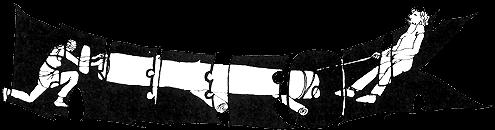

Freefolk community is abandoned except for the winter birds and the snow rabbits and maybe the deer have come back, now that we people are gone. We left over a year ago. Gradually the others did too. I've meant to write about it all since then, but it took time to heal some wounds and then we got into some other things .....
Freefolk was a small, rural anarchistic, commune that some of you know of, maybe, and others don't. It flowered briefly for a year and a half, then died out the way a lot of communes do that you hear about and then after a while don't hear about anymore.
I like to think of our attempt there as part of a larger experiment. Somehow what we discovered may help others who want to learn and live together in community.
There were times at Freefolk when love bloomed, when we sang together, worked together as sisters and brothers, felt in us the power of our mother earth. There were also times when we didn't speak to each other, or care enough to reach out when someone clearly needed us. Because we lived a life peeled down to the good necessities; because we lived without the shelter of all these institutions that protect and separate people from each other; the high times were really high...... and the bad times pretty ugly. Eyes stopped meeting, hands stopped reaching and we became strangers living in the same house.
A lot of people think communities flop because of economic hassles or pressure from the outside. We didn't find that to be true. Through highs and hassles the work did get done. We ate well and kept reasonably warm (though sometimes friction kept us from getting things done as well as we might have.) With a minimum of effort we were able to maintain open and friendly relationships with our neighbors. I guess I can't say why "communities" flop, but I have some ideas about why Freefolk isn't there anymore.
Partly from necessity, partly because we didn't appreciate our own needs for separateness (what some people call privacy, but that word always reminded me of bathrooms), we attempted to live too closely. Each family or individual had a sleeping place of his own, but in the long Minnesota winter we just couldn't keep all those shacks warm all day. So we had to spend most of our waking hours together in the community room (10 x 20, wood stove, table, chairs, sink) with three toddlers who had a harder time learning to share than we did.
Idealists that we are with a strong vision of how men ought to live together, it was really difficult for us to admit that we were uptight, needed more room, more time for ourselves or really didn't care that much for each other sometimes. Each of us had a vision - really amazingly similar - about the way we wanted to live. But because we weren't there yet, it was the small things that caused friction.
We all wanted to live a simple primitive existence. We all were content to live without rules, electricity, power tools, or running water. In fact, we strongly felt that a simple life was necessary for our emotional, spiritual, economic and political survival.
What hung us up was whether we should eat all our honey in the fall or ration it through the winter; whether we should tie the cow or let her move around in the barn; whether we should fence the garden around front or back; whether we should restrain the kids or let them clobber each other.
And it wasn't the fence or the honey that really mattered. It was partly the fact that we had no other personal creative challenges to divert our energies - the garden, the food, the children were our chief interests in life - and partly the fact that we started at the pinnacle of a vision where people shared and cared for one another intensely but, in reality, that was just not where we were at.
The mountain crumpled tension rose, we grew away from each other. Maybe things didn't have to go that way. There were a lot of strongly individual types at Freefolk. Meaning, I guess, people who liked having their own way. People who had an urge to see the world move when they pushed it. But then that's the kind of individuals that seem attracted to community. People who want to change their environment, not just fit in. People who find meaning in struggle. People who probably aren't real groupie types.
Maybe we could have made it together and adapted to meet our various separate and collective needs - if we had tuned into what was happening sooner. We were blinded by dreams, I think. Trapped living so closely. And, saddest of all, unable in a year and a half to learn to talk to one another; to tell each other straight what it was we felt or thought; to be open about our needs and our hurts. Bitterness grew and silence grew until it filled up the clearing and now we're all gone except for the winter birds and the rabbits..... So, where do you go from there..... ? We each went different ways, still looking, still experimenting .....
The land is a part of us and people and loving.
Got to find a way to put it all together.
|
 Communes come and communes go. Why, when so many are started with such good intentions, do they so often fail? Here - with - love- is the reason WHY one community crumbled. |
|
|